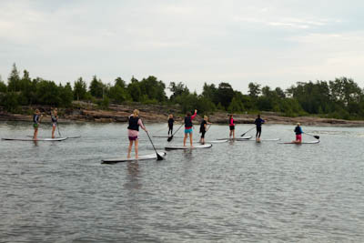
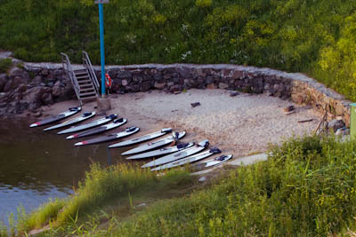
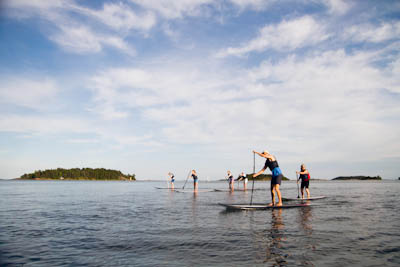

VÄLINEVUOKRAUS
Kaikilta pisteiltämme on mahdollista vuokrata SUP-melontalautoja. Käytössä ovat kovat Starboardin laudat ja säädettävät melat. Laudan voit varata varausjärjestelmämme:
www.varaaheti.fi/twentyknots
Vuokraushinnat:(sis. alv.)
1 tunti: 20€
Lisätunnit: 10€
Sarjakortit:(Sarjakortin käyttökerta on 2 tuntia. Kortit käyvät kaikissa TwentyKnots-pisteissä.)
5 kerran kortti: 90€
10 kerran kortti: 160€
Kauden 2015 SUP-kausikortti: 290€
Kausikortilla voit varata välineet varausjärjestelmästämme kerrallaan 2 tunniksi per päivä. Päivän tilanteen mukaan on mahdollista varata lauta pidemmäksi aikaa. Tästä sovitaan puhelimitse aina erikseen. Kausikorttilaiset pääsevät myös retkillemme ja kursseillemme erikoishintaan.
SUP-alkeiskurssilla (n. 2h) opitaan SUP-melonnan perusteet: laudalle nousu sekä poistuminen, SUP-laudan ja melan käsittely, melontatekniikoita, käännökset sekä turvallisuus vesillä. Lähdemme kurssin aikana myös melontaretkelle, jonka aikana varmuus SUP-lautaan karttuu. Kurssin jälkeen olet valmis melomaan itsenäisesti ja osallistumaan monipuolisille retkillemme. Kurssin hintaan sisältyvät kaikki tarvittavat välineet sekä yksi yhden tunnin SUP-vuokraus kaudelle 2015.



Mitä tarvitsen?
Pyyhe, juomapullo, urheiluvaatteet sään mukaisesti (huom. kastuminen on mahdollista joten otathan vaihtovaatteet mukaan).
Kesto:
2 tuntia
Hinta:
50€/hlö (sis. kurssin lisäksi yhden tunnin SUP-vuokrauksen kaudelle 2015, arvo 20€)
Maksu:
Kurssimaksu hoidetaan paikan päällä. Meillä käyvät sekä kortti- että käteismaksut. (VISA, MasterCard, American Express, JCB)
Muuta huomioitavaa:
Kursseillamme on säävaraus. Ilmoitamme edeltävänä päivänä mikäli kurssi joudutaan perumaan.
TWENTYKNOTS & SUP
TwentyKnots on Pohjoismaiden ensimmäinen ASI-akreditoitu (Academy of Surfing Instructors) SUP-koulu. Koulutetut ja liikunnalliset ohjaajamme, laadukkaat Starboardin kovat SUP-laudat ja turvallinen harjoitteluympäristö luovat hyvän alustan SUP-melontaan. Järjestämme SUP-alkeiskursseja, SUP-retkiä, SUP-välineiden vuokrausta, SUP-joogaa sekä muita hauskoja aktiviteetteja supeilla.
Mitä on SUP?
Havaijilta alunperin lähtöisin oleva suppaus eli SUP-melonta (Stand Up Paddle) on erittäin hauska ja helposti omaksuttava liikuntamuoto vesillä. Lajissa liikutaan seisaaltaan meloen surffilautaa muistuttavan laudan päällä. Voit retkeillä, joogata, kuntoilla, surffata aalloilla ja nauttia veden äärellä liikkumisesta erilaisissa vesistöissä. Suppailu on lisäksi erittäin tehokas kokovartalotreeni! Suomen luonto ja saaristo tarjoavat erinomaiset puitteet SUP-melontaan.